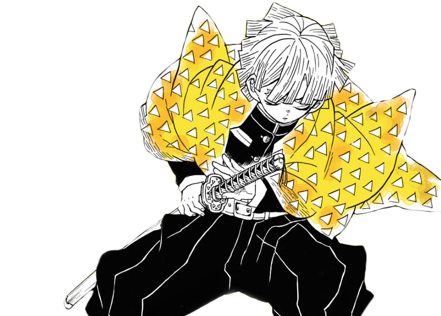

Meet Our Team

🗡️ Tanjiro Kamado
A compassionate and brave Demon Slayer who fights to protect humanity and cure his demon-turned sister, Nezuko. Master of Water and Sun Breathing techniques.

⚡ Zenitsu Agatsuma
Timid and emotional, Zenitsu often panics in danger—but when unconscious, he becomes a lightning-fast warrior using Thunder Breathing with astonishing power.

🐗 Inosuke Hashibira
A fierce, untamed fighter raised in the wild. Known for his boar mask, unpredictable fighting style, and Beast Breathing techniques, he charges into battle headfirst.